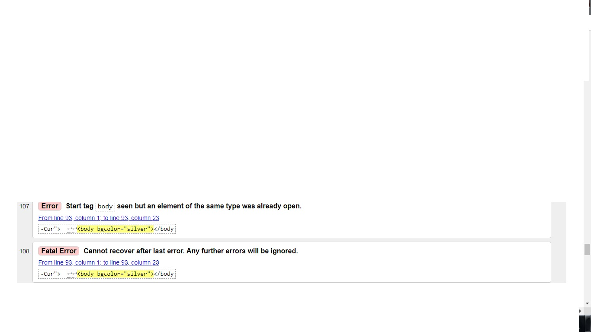

Walidacja – w naukach technicznych i informatyce działanie mające na celu potwierdzenie w sposób udokumentowany i zgodny z założeniami, że procedury, procesy, urządzenia, materiały, czynności i systemy rzeczywiście prowadzą do zaplanowanych wyników. Walidator – program sprawdzający poprawność dokumentu o określonej składni. Walidatory stały się na tyle popularną usługą, że niektóre z nich ewoluowały w multiwalidatory przeprowadzające kilka wariantów walidacji jednocześnie.
